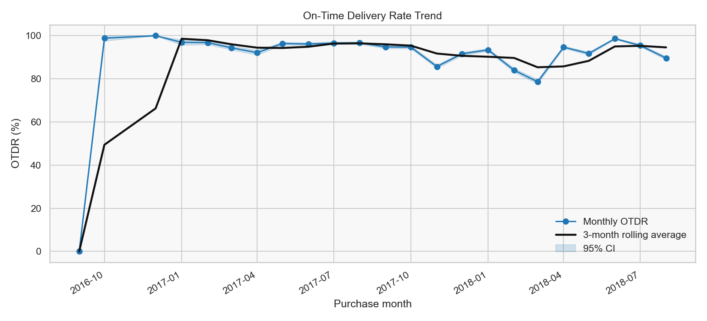
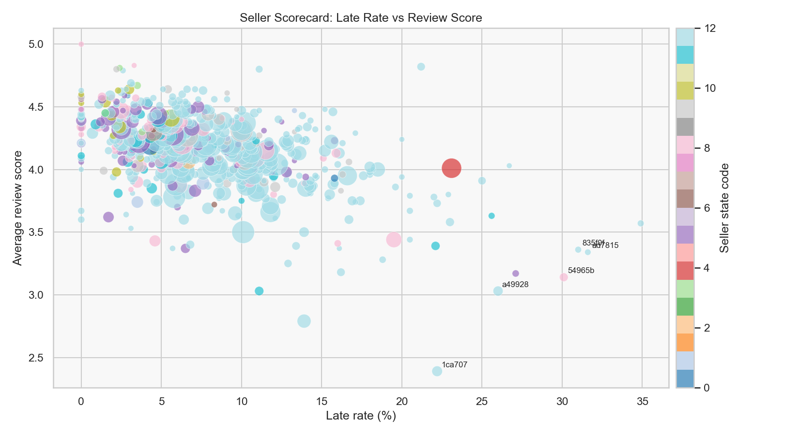
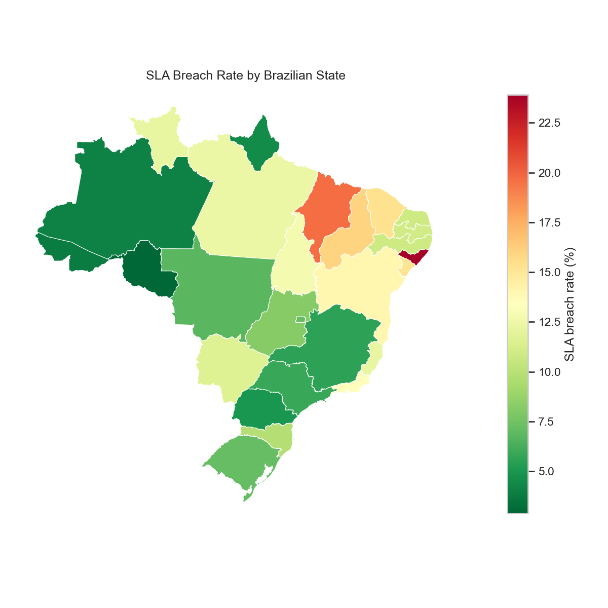
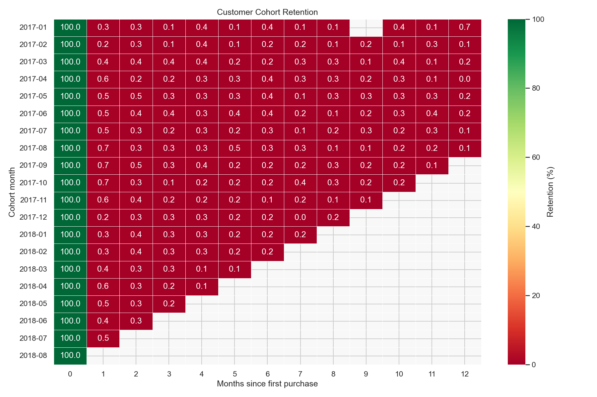

Delivered orders96,470
Overall OTDR91.89%
Bottom-decile breach share17%
Bottom-decile order share8.40%




Decision summary
- Prioritize bottom-decile sellers for remediation because their breach share materially exceeds their order share.
- Use lane-level SLA policies for high-risk seller-state/customer-state corridors instead of one national promise.
- Target the sharp post-purchase retention loss with delivery-triggered re-engagement and freight experiments.
- Track OTDR, P90 lead time, seller tier, freight-to-GMV, and refresh checks in the weekly operating review.